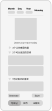
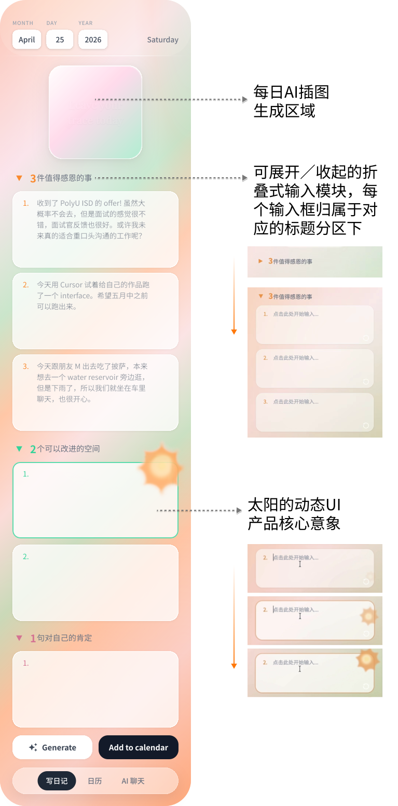

1. 产品灵感与调研


Trace是一款基于正向心理学的AI日记应用，将用户的日常记录转化为持续的自我认知系统，帮助用户实现自我成长与情绪疗愈。

Trace产品讲解视频
情绪管理是高频、真实却常被忽视的日常需求。在高压环境下（留学、申请季、季节性抑郁高发期），用户往往会经历情绪低谷——但单靠意志力硬扛是不可持续的，用户需要一个可以长期依赖的外部调节工具。
具体痛点包括：
Trace 的目标不是帮用户「解决」情绪问题，而是提供一套可持续的自我调节系统：
POST /api/scratch-summary（Gemini 文本）；溯源弹窗展示对应日记片段。
/api/emotion-trend 与 /api/hidden-positive-signals 发起 POST
请求。服务端接收请求后调用 LLM 进行分析：情绪趋势返回按日打分的序列（每天一个 1–10 的分数），隐藏积极信号返回一段长文本洞察。两个功能均优先调用 Claude（需配置 Anthropic API
Key），未配置或调用失败时自动降级使用 Gemini。分析结果以会话卡片的形式写入 AI 聊天 Tab 展示。
POST /api/chat；当前服务端使用 Gemini 文本模型整段生成回复（需在环境变量中配置
GEMINI_API_KEY）。
每张界面与正下方序号步骤对应；整体设计目标是从首次进入到完成一次「有意义的复盘」。左 → 右：日记｜日历｜AI 聊天。

本节只写产品级视觉与信息架构原则；具体组件实现、状态与工程向取舍见下方时间轴「3. 前端设计」，避免两处逐条复述。
sun-canvas.js）基于 Canvas 2D +
requestAnimationFrame 逐帧渲染，输入框获焦触发。
http 单文件服务：同源托管静态页 + REST 风格 JSON API；密钥与模型选择均在服务端完成，前端只消费 JSON。
AI 模型分配与备用机制：以下表按能力与接口列出所用模型及备用策略。
| 能力 | 接口 | 优先 | 备用 / 说明 |
|---|---|---|---|
| AI 聊天（自由追问 · 会话补全） | /api/chat |
Gemini（文本链） | — |
| 写日记 · （2）今日 AI 插图（感恩 → 意象图） | /api/generate-image |
Gemini 图像 | — |
| 日历 · （2）每日刮刮乐 | /api/scratch-summary |
Gemini（文本链） | — |
| 日历 · （3）区间 AI 分析 — 情绪趋势 | /api/emotion-trend |
Claude（Anthropic 模型链） | 无 Key 或链式失败时用 Gemini；仅 Gemini Key 时直接 Gemini |
| 日历 · （3）区间 AI 分析 — 隐藏积极信号 | /api/hidden-positive-signals |
Claude 流式 | 失败则 Gemini 伪流式；再失败则规则化文案 |
表内「文本链」指多个 Gemini 文本模型顺序尝试。限流或瞬时失败时，文本类 Gemini 会先退避重试，再在链内换下一模型；这与「Claude → Gemini」的跨厂商 fallback 是不同层级的容错，可叠加生效。
/api/chat、刮刮摘要；情绪单日打分与隐藏积极信号的兜底路径。ANTHROPIC_API_KEY）。
上表已列全量 API 路径；前端对它们均为同源 POST、application/json，与静态页由同一 server.js 进程提供。
| 边界场景 | 处理策略 |
|---|---|
| 无感恩即生图 | 前端拦截并提示先填写至少一条感恩内容。 |
| 区间内无存档或字段为空 | 分析接口返回明确 400 文案；隐藏积极信号在缺「改进/肯定」时提示无法分析。 |
| API 失败 / 非 JSON / 网络错误 | 状态栏与弹窗说明；引导检查 node server.js、.env 与浏览器是否允许访问本地 API。 |
| 模型限流或 overload | 服务端对 Gemini 带退避重试与模型链切换；隐藏积极信号可在模型全失败时使用规则化 fallback 文案。 |
| 情绪分数跨档 | 折线颜色在相邻点之间做渐变，避免硬切视觉断层。 |
| localStorage 满或禁用 | 静默失败时已尽量 try/catch；产品级后续应显式降级提示。 |
写日记页面是Trace的核心入口。用户每天在这里完成一次3-2-1记录——三件感恩的事、两个可以改进的地方、一句对自己的肯定。
页面采用折叠式输入模块，每个板块归属于对应的标题下。输入框获焦时，太阳动画随之出现，为书写营造温暖的仪式感。
完成记录后，AI根据当天内容生成一张专属插画，为这天留下印记。

页面由两个模块构成。上方为月视图日历，每天完成日记后当日格子显示AI生成的插画缩略图，点击可查看当天完整的3-2-1记录。
下方为刮刮乐模块，系统将用户所有历史日记中的Gratitude条目汇总为文本库，调用LLM进行语义整合，输出一句提炼后的正向表达藏于涂层之下。刮开即可看见来自过去的一段正向记忆。
创作者：易文迪Wendi